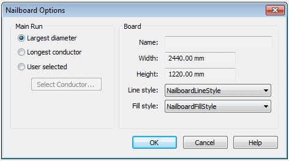
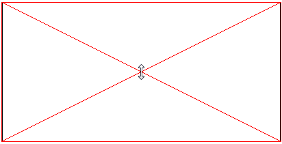
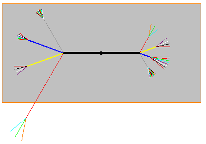
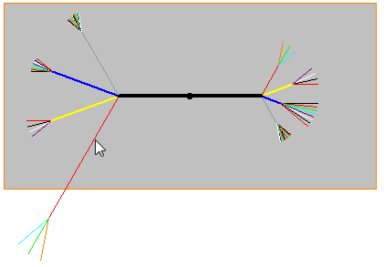
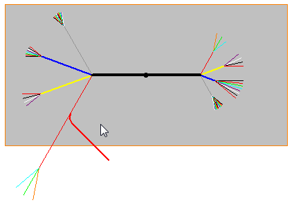
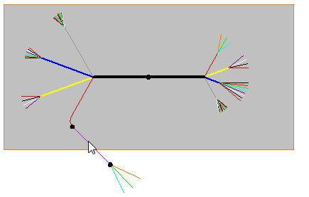
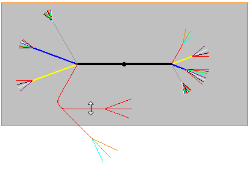
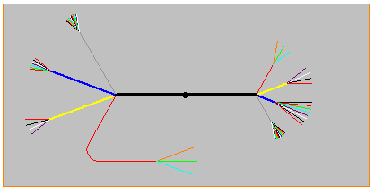

Activity: Creating and editing a nailboard view
This activity guides you through the creation of a nailboard view and the edit of the flattened geometry to properly fit the drawing view.
Click the File tab→ Open → Browse.
In the Open File dialog box, set the Look in: field to the folder where the activity files were downloaded.
Click nailboard_activity_1.dft and then click Open.
The Nailboard View command flattens the 3D harness onto a 2D nailboard. The nailboard view is a rectangular object that contains linear segments that represent the branches in the harness.
Click the Diagram tab→Views group→Nailboard command .
On the Select Model dialog box, select nailboard_activity_1.asm and then click Open.
On the Nailboard Options dialog box, ensure that the option selections match the illustration and click OK.

While the setting should match the illustration, the Width and Height values may be slightly different.
Position the nailboard view as shown in the illustration and click to place it.

Notice that the flattened geometry does not fit properly within the rectangular view.

In the next steps you will edit the geometry to make it fit properly.
If the flattened geometry does not fit the nailboard view properly, there are a couple of things you can do to correct the problem.
You can use the Insert Bend command to create a bend on the flattened geometry so that it fits in the nailboard drawing view. You can define the radius and sweep angle for the bend. Solid Edge inserts the bend based on this information, while maintaining the overall length of the branch.
You can rotate the segment by clicking and dragging the segment to fit in the view .
Click the Diagram tab→Modify group→Insert Bend command  .
.
On the Insert Bend command bar, type 75 for the radius.
Click the segment in the approximate location shown in the illustration.

Move the cursor to ensure the direction of the segment matches the illustration and click.

Click the Select group→Select command  .
.
Click the segment shown in the illustration.

Drag the cursor to the approximate location shown in the illustration and click.

Click to place the segment within the nailboard view.

This completes the activity. Close the draft document without saving. Proceed to the activity summary.
In this activity you used the Nailboard View command to create a flatten a 3D harness assembly onto a 2D board to create a nailboard drawing view. You then edited the flattened geometry to fit properly on the nailboard drawing view.
Click the Close button in the upper-right corner of the activity window.